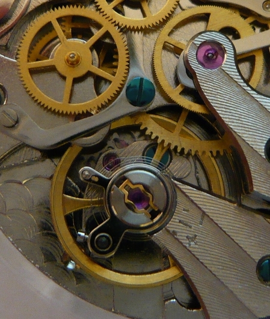
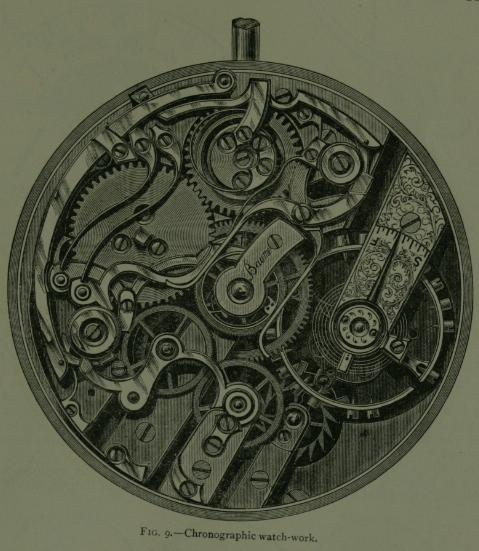
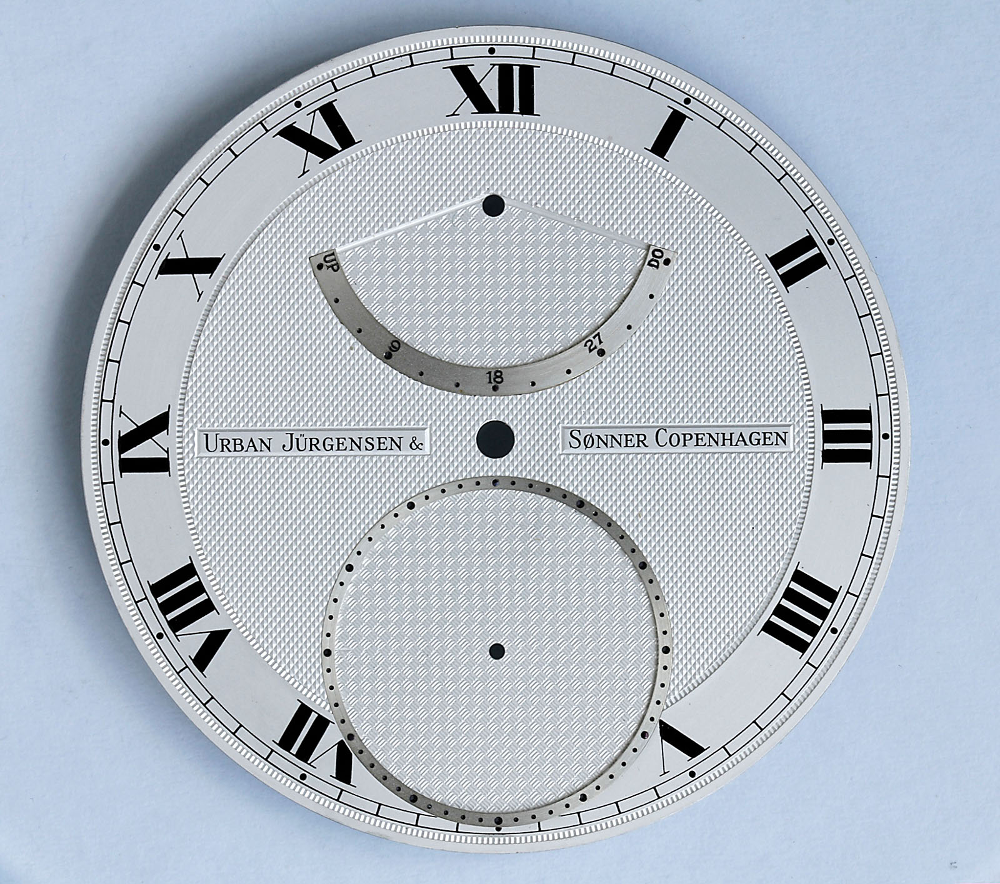

The Masterwork of Split-Seconds Chronometry
Engineered with dual column wheels, an isolator mechanism to eliminate balance drag, and 36,000 vph chronometric escapements. Every Caliber IX timepiece embodies the pinnacle of mechanical timekeeping, hand-regulated in our New York atelier.

The Pillars of Rattrapante Chronometry
While standard chronographs utilize stamped cam levers and single second hands, the Rattrapante complication coordinates two superimposed sweeping seconds hands to measure simultaneous intermediate intervals with surgical precision.

Dual Column Wheels
CNC-milled from solid steel billets and thermally flame-blued at 290 degrees Celsius. Each column pillar coordinates the start, stop, split, and reset levers with velvety, tactile feedback.
Inspect Kinematics →
Zero-Drag Brake Calipers
Spring-loaded pincer arms clasp the heart cam wheel instantly upon split engagement. Our proprietary isolator wheel disengages the driving wheel to prevent balance amplitude drop.
Discover Caliber →
Hand-Turned Guilloché
Each solid silver dial is cut on 19th-century manual rose engine lathes, creating microscopic geometric Clous de Paris fluting that scatters light without visual glare.
Explore Dials →The Pure Art of Hand Anglage and Spéculaire Black Polish
No machine can replicate the hand beveling executed by our master watchmakers. Every internal corner of our German silver bridges is sculpted with diamond files, smoothed with Arkansas stones, and polished with gentian wood pegs until it gleams with specular reflectivity.
The balance assembly features a free-sprung variable inertia Glucydur balance with platinum poising screws and a hand-formed Breguet terminal curve, delivering certified chronometric precision across temperature variations.
Commission a Handcrafted Chronograph
Private salon appointments for bespoke dial guilloché motifs, case metallurgy selections (950 Platinum, 18K White Gold, or Titanium Grade 5), and personalized caliber engraving are hosted at our New York atelier.